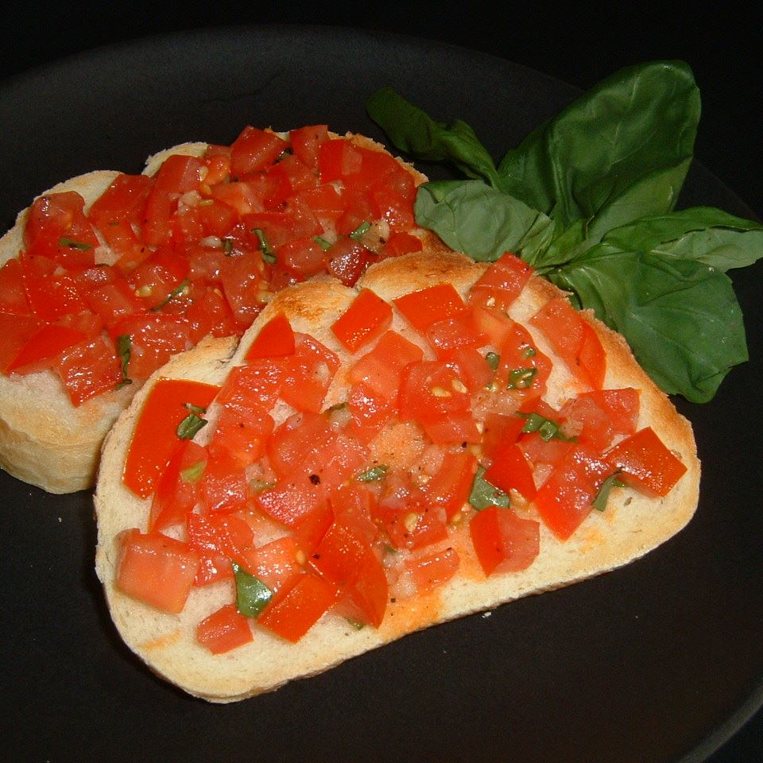

Bruschetta

Description
This bruschetta recipe is a great summer appetizer featuring
fresh tomato salsa on toasted Italian bread.
Ingredients
- 8 seeded, chopped roma (plum) tomatoes
- 5 leaves chopped fresh basil
- 2 cloves minced garlic
- 1 pinch dried oregano
- 1 dash crushed red pepper
- 1 pinch salt
- 1 pinch ground black pepper
- 1 tablespoon olive oil
- 1 (1 pound) loaf French or Italian-style bread
Steps
- Preheat the oven broiler.
- Combine tomatoes, basil, garlic, oregano, red pepper, salt, pepper, and olive oil in a mixing bowl.
Use more olive oil, if necessary, to coat entire mixture. Allow mixture to sit for 10 minutes.
- Slice bread to 1/2-inch thickness; arrange on a baking sheet in a single layer.
- Place the baking sheet under the preheated broiler until bread slices are lightly browned,
about 1 minute per side.
-
Remove the baking sheet from the oven. Spread tomato mixture on each piece of toasted bread.
Return to the oven and broil until tomato mixture is hot but not cooked, 2 to 3 minutes.